Kati 10-10 — the four fixes, before / after
Branch vj-javitas-1010 from main 247d4f6 · local production build, PG 18.4, test AI ([MINTA] texts), local image maker · 2026-10-10. Measured with the Tibor-próba measurer at 390 × 844 and 1440 × 900. Triage: VISSZAJELZES-TRIAZS-1010.html.
#10 Kezdőlap — „Képet készítek a munkámról” (was „Új képet készítek”)
phone 29 / desktop 30 words · green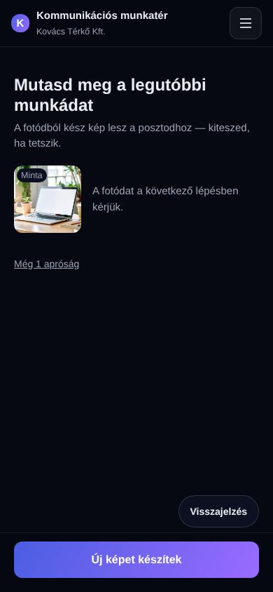
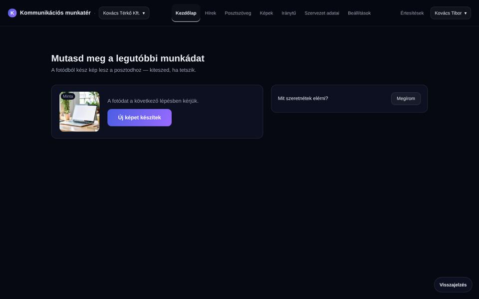
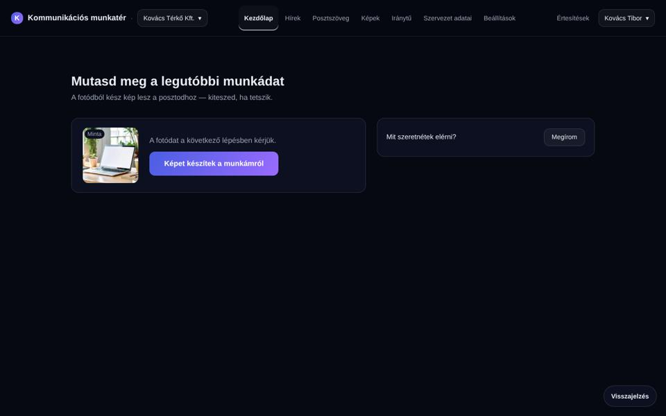
#5 Posztszöveg — „Képet készítek ehhez a poszthoz” (new label, migration 0159)
same target /kepek/uj/hir?poszt=… · on the phone the image place is on the preview tab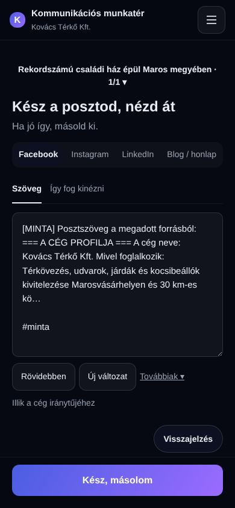
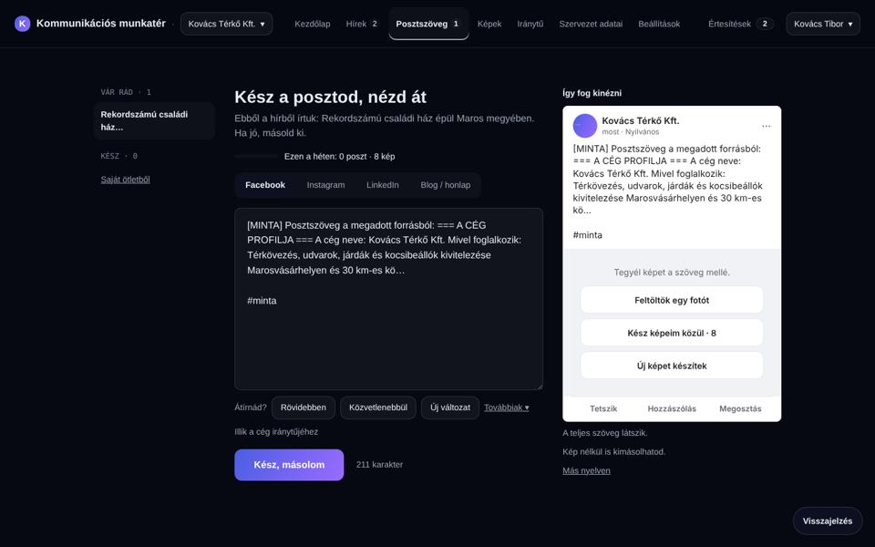

#11 Feedback on the phone — the bubble inside 390, the mode bar stacked
bubble right edge 408 → 378 at 390 · desktop 940 → 940 (unchanged) · mode bar 206 → 126 px tall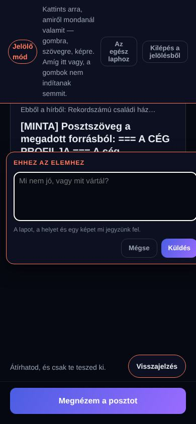
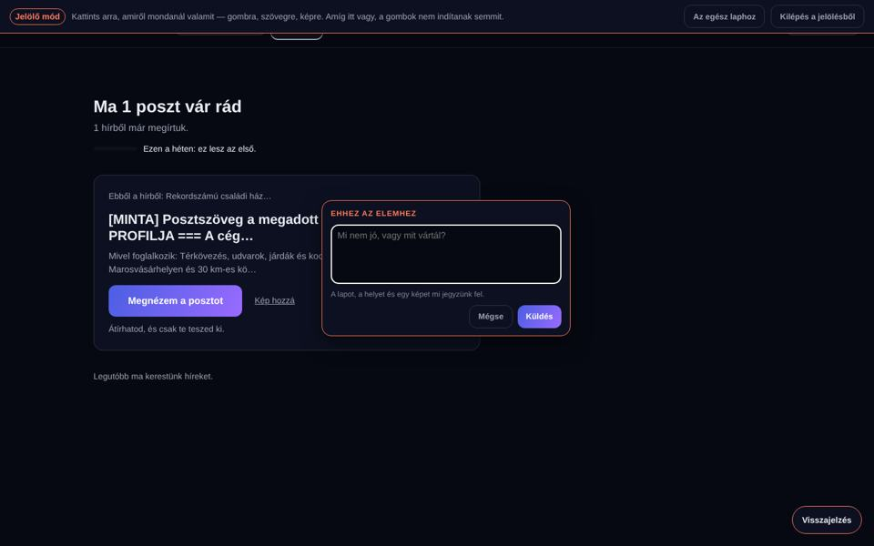
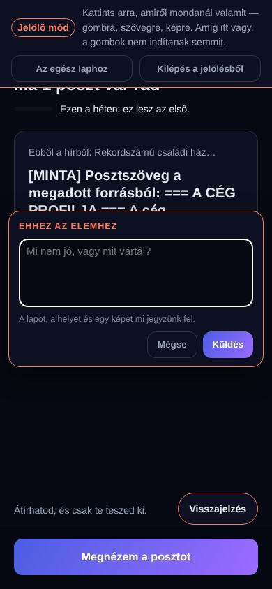

#7 Képek — the Romanian text field grows (2–4 lines)
input 44 px one line (364 of 1513 px visible) → textarea 112 px = 4 lines on phone (scrolls after), 88 px = 3 lines on desktop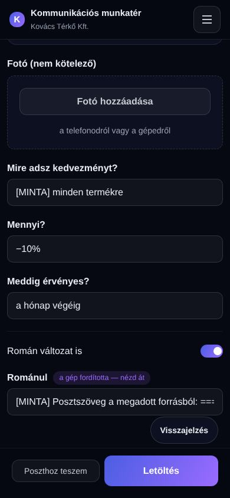
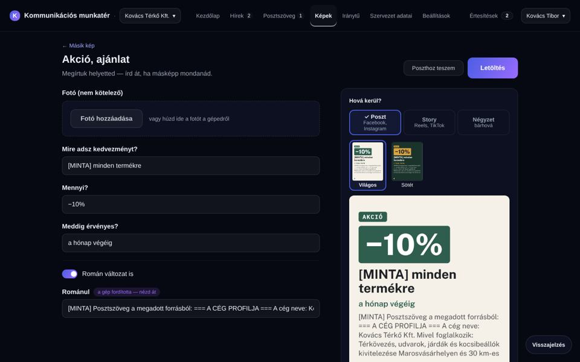
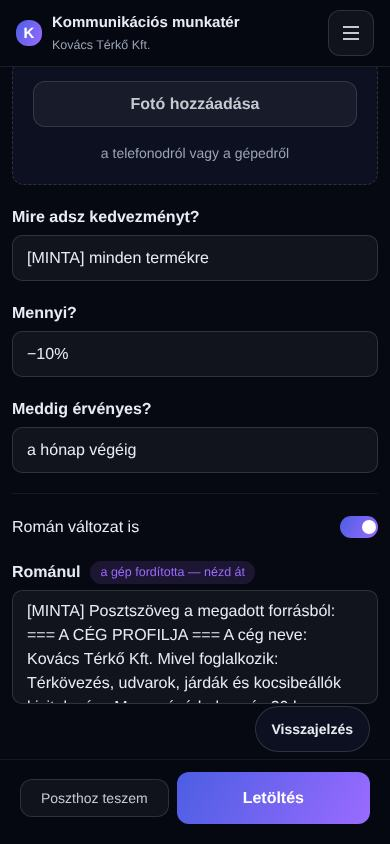
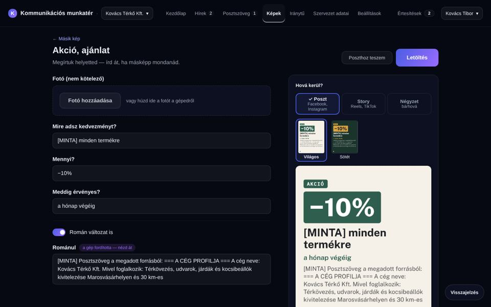
#4 Hírek — a quiet source line on each card (desktop)
2 cards: phone 35 → 35, desktop 46 → 48 · green
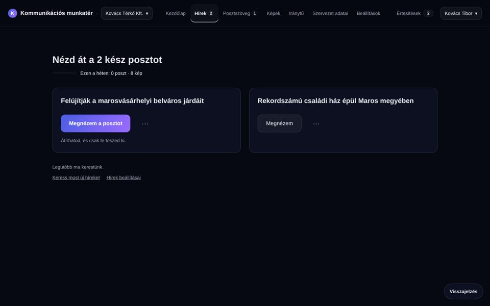
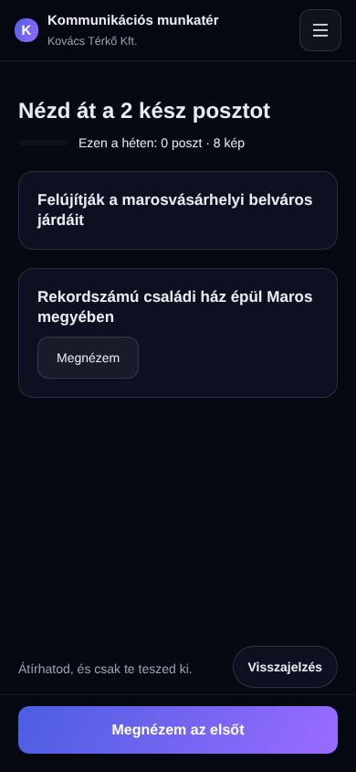
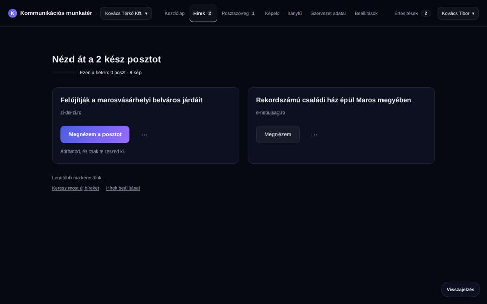
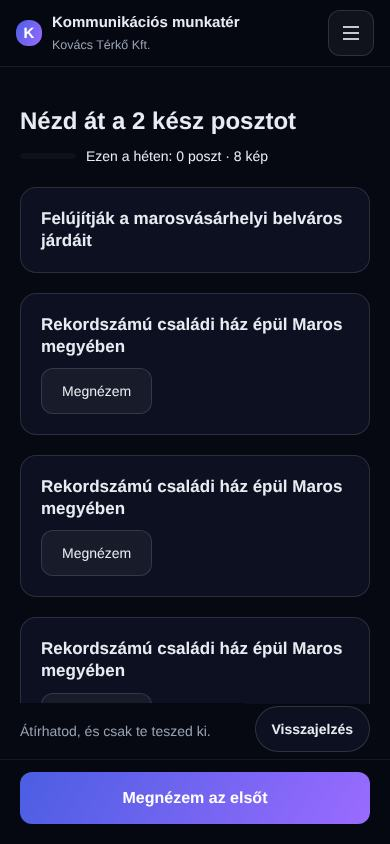
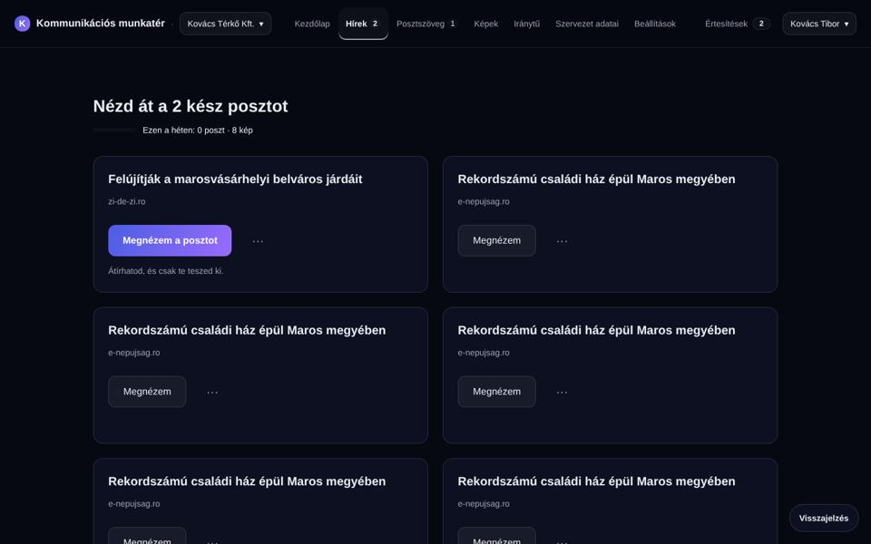
Hírek word counts — why the source line is short and desktop-only
| Cards | Phone 390 (≤ 40) | Desktop 1440 (≤ 60) |
|---|---|---|
| 2 (real) | 35 → 35 ✓ | 46 → 48 ✓ (with „domain · time” it was 56) |
| 4 (copies) | 49 → 49 — red already before | 62 → 66 — red already before (with time: 82) |
| 6 (copies) | 55 → 55 — red already before | 69 → 75 — red already before (with time: 99) |
From the 4th card on, the Hírek page is over T5 even without the source line (existing, not caused by this change). The approved 04b phone drawing is at exactly 40/40 words with the „Posztod:” line, so one more word turns it red (measured: 41) — so the source line is desktop-only. On the phone the source is one tap away, on the first line of the 05 page. The time is only on 05.